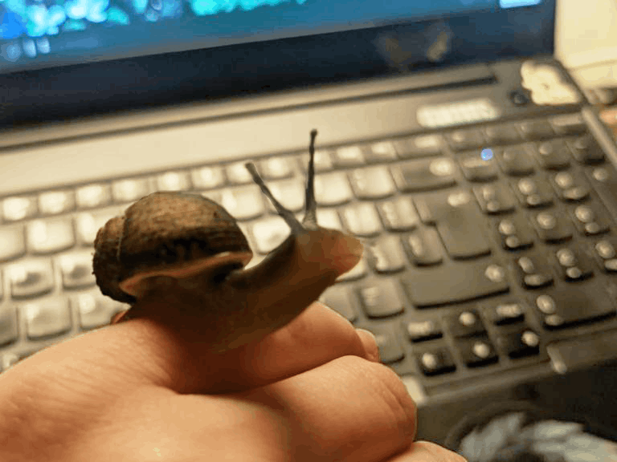

In 2024, I started getting interested in the idea of keeping snails. Then I found a peculiar one in a lettuce I bought, and was smitten.
Since then, I've started getting into it. I got her a suitable home, and started researching how to keep these little creatures happy...
This has spiraled a tiny bit - and now have a couple bins of isopods, and a few small garden snails. Check these critters out!